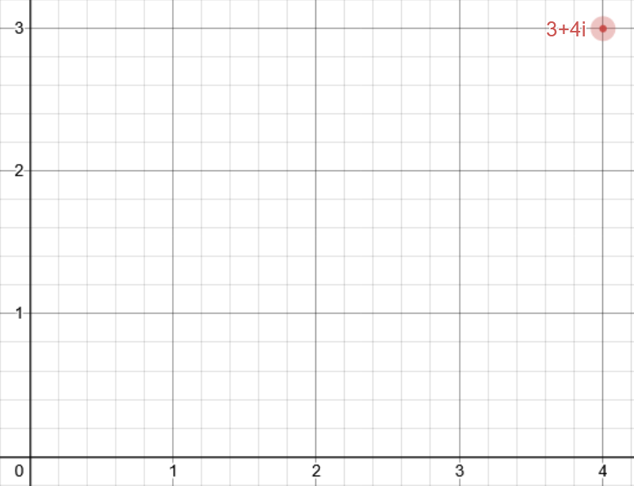
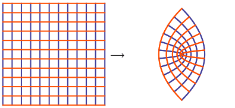

What does this site do?
In short: this site is a method of visualising functions on complex numbers. It takes gridlines and displays the transformation after the application of the inputted function. If this means nothing to you, then read on.
Complex numbers
The complex numbers is an extension of the real numbers. The real numbers are numbers that we deal with every day, numbers like 3, -2.45, \frac{2}{3}or even \pi. However, they cannot do everything. In your life, you have probably squared a lot of numbers, and will have noticed that, if you square a number, it is always positive. The reason for this is quite simple: a positive number times a positive number is positive, and a negative number times a negative number is also a positive number. So now ask yourself: what is \sqrt{-1}? Remember that the square root sign means "what number squared gives negative one". However, we just established that this is impossible, as any square number is positive. So that's just it then? Do we just say it doesn't exist? Well, mathematicians think not. What if we just made up a number that fits that description? All the other numbers are made up anyways, whats one more?. Lets call this new "imaginary" number i, and so, the field of complex analysis was born.
We can add complex numbers and real numbers together, like anything else, but we cant simplify it like usual. For example, 2+i is just 2+i. We can also multiply i by a real number, such as 3i. Thus, a complex number can be any number of the form a+bi where a and b are both real numbers. Adding and multiplying complex numbers is exactly the same to how you perform operations with real numbers. Simply treat i like a variable instead of a number. For example:
(3-4i) + (7+12i) = (3+7) + (-4+12)i
= 10+8i
(3-4i) \cdot (7+12i) = 3\cdot7-4i\cdot7+3\cdot12i-4i\cdot12i
= 21-28i+36i-48{i}^{2}
= 21+8i+48
= 69+8i
Visualisations
Complex numbers can be thought of as coordinates on a 2-d plane. Take, for example, the number
4+3i. It can be visualised as the point 4 along and 3 up, like so.

Every point on a 2-d plane can be expressed this way, meaning that actually, in reality, the 2-d
plane is actually just a bunch of complex numbers in disguise.
Now, you might be wondering how we visualise a function of these numbers. But first, what is a function? Well, in simple terms, a function takes a number as input, and gives a number as an output. in some senses, it "transforms" this number into a different number. Working with real numbers, we can visualise this quite easily. All you need is 2 dimensions to properly visualise a function: one for the input, and one for the output. This is the traditional method to visualise functions. However, with complex numbers, this is not possible. We already needed 2 dimensions to display a single complex number, how are we going to visualise the connection between 2 of them? The only way to do this seems to be to use 4 dimensions, which the average human cannot comprehend properly.
This is the motivation behind this program. Here, we cheat by not explicitly showing the input point. Instead, we convey the information by calling the function on every point on the plane, and then display the shape that it makes afterwards. To show the shape of the plane, we show the way that the gridlines change. To preserve some of the input information, the lines move from the initial state before transformation, to the final state after transformation.
As an example, take the functionf(x)=x^2. On the real number line, this method is not very
interesting, looking like this:

However, using complex numbers, the transformation now looks like this:

This program allows you to visualise the transformation under any function, from any set of input gridlines. This is not the
only way to visualise complex functions, but it allows for noticing similarities between 2 functions, and is quite intuitive.